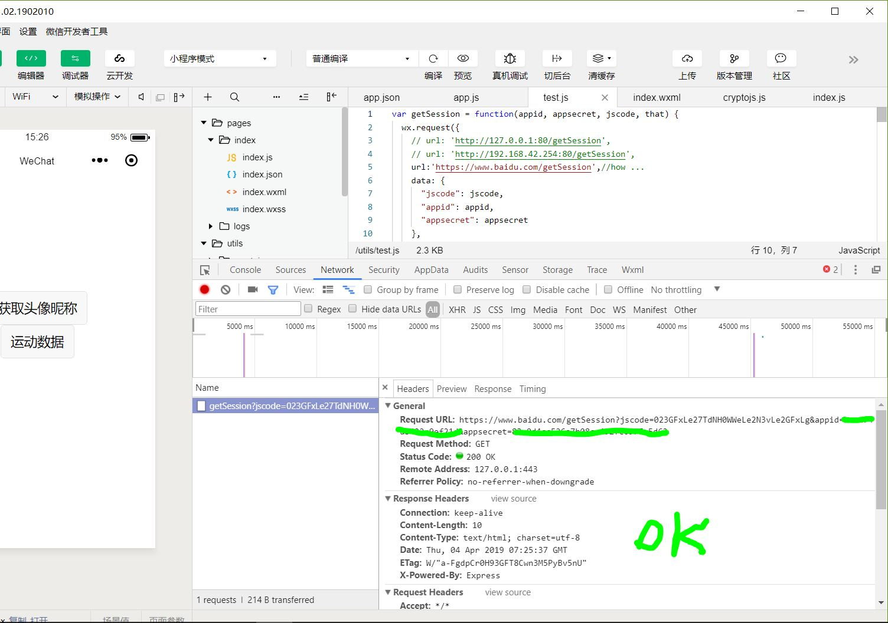
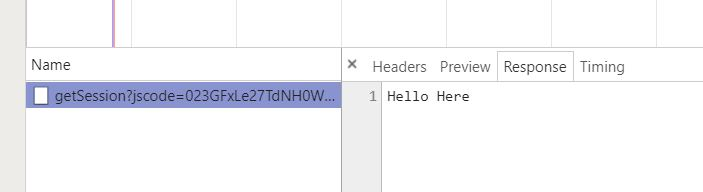

SSL
一个故事教你看懂什么是数字证书，它的原理是什么?它的作用是什么？
Https协议：超文本传输安全协议，简单讲是HTTP的安全版。即HTTP下加入SSL层，HTTPS的安全基础是SSL，因此加密的详细内容就需要SSL。
SSL(SecureSocketLayer)是netscape公司提出的主要用于web的安全通信标准.
TLS(TransportLayerSecurity)是IETF的TLS工作组在SSL3.0基础之上提出的安全通信标准，SSL/TLS提供的安全机制可以保证应用层数据在互联网络传输不被监听,伪造和窜改。
SSL位与应用层和 TCP/IP之间的一层，数据经过它流出的时候被加密，再往TCP/IP送，而数据从TCP/IP流入之后先进入它这一层被解密，同时它也能够验证网络连接两端的身份
SSL协议包含2个子协议，一个是 包协议， 一个是 握手协议。 包协议位于握手协议更下一层。
SSL握手过程说简单点就是：通信双方通过不对称加密算法来协商好一个对称加密算法以及使用的key，然后用这个算法加密以后所有的数据完成应用层协议的数据交换。
安全通信模型的建立–>CA的引入
RSA公钥加密
“客户”->“服务器”：你好
“服务器”->“客户”：你好，我是服务器
“客户”->“服务器”：向我证明你就是服务器
“服务器”->“客户”：你好，我是服务器 {你好，我是服务器}[私钥|RSA]
“客户”->“服务器”：{我的帐号是aaa，密码是123，把我的余额的信息发给我看看}[公钥|RSA]
“服务器”->“客户”：{你的余额是100元}[私钥|RSA] —> problem here !!!
注意上面的的信息 {你的余额是100元}[私钥]，这个是“服务器”用私钥加密后的内容，但是我们之前说了，公钥是发布出去的，因此所有的人都知道公钥，所以除了“客户”，其它的人也可以用公钥对{你的余额是100元}[私钥]进行解密。所以如果“服务器”用私钥加密发给“客户”，这个信息是无法保密的，因为只要有公钥就可以解密这内容。然而“服务器”也不能用公钥对发送的内容进行加密，因为“客户”没有私钥，发送个“客户”也解密不了。]
引入对称加密算法
“客户”->“服务器”：你好
“服务器”->“客户”：你好，我是服务器
“客户”->“服务器”：向我证明你就是服务器
“服务器”->“客户”：你好，我是服务器 {你好，我是服务器}[私钥|RSA]
“客户”->“服务器”：{我们后面的通信过程，用对称加密来进行，这里是 对称加密算法 和 密钥 }[公钥|RSA] //对称加密的算法和密钥的具体内容，客户把它们发送给服务器。
“服务器”->“客户”：{OK，收到！}[密钥|对称加密算法]
“客户”->“服务器”：{我的帐号是aaa，密码是123，把我的余额的信息发给我看看}[密钥|对称加密算法]
“服务器”->“客户”：{你的余额是100元}[密钥|对称加密算法]
在上面的通信过程中， “客户”在确认了“服务器”的身份后，“客户”自己选择一个对称加密算法和一个密钥，把这个对称加密算法和密钥一起用公钥加密后发送给“服务器”。
注意，由于对称加密算法和密钥是用公钥加密的，就算这个加密后的内容被“黑客”截获了，由于没有私钥，“黑客”也无从知道对称加密算法和密钥的内容。
由于是用公钥加密的，只有私钥能够解密，这样就可以保证只有服务器可以知道对称加密算法和密钥，而其它人不可能知道(这个对称加密算法和密钥是“客户”自己选择的，所以“客户”自己当然知道如何解密加密)。这样“服务器”和“客户”就可以用对称加密算法和密钥来加密通信的内容了。
RSA加密算法在这个通信过程中所起到的作用主要有两个：
- 因为私钥只有“服务器”拥有，因此“客户”可以通过判断对方是否有私钥来判断对方是否是“服务器”。
- 客户端通过RSA的掩护，安全的和服务器商量好一个对称加密算法和密钥来保证后面通信过程内容的安全。
如何确保公钥是服务器发布的（or服务器是如何发布公钥的）？
在最开始我们就说过，“服务器”要对外发布公钥，那“服务器”如何把公钥发送给“客户”呢？我们第一反应可能会想到以下的两个方法：
- 把公钥放到互联网的某个地方的一个下载地址，事先给“客户”去下载。
- 每次和“客户”开始通信时，“服务器”把公钥发给“客户”。
但是这个两个方法都有一定的问题:
对于a)方法，“客户”无法确定这个下载地址是不是“服务器”发布的，你凭什么就相信这个地址下载的东西就是“服务器”发布的而不是别人伪造的呢，万一下载到一个假的怎么办？另外要所有的“客户”都在通信前事先去下载公钥也很不现实。
对于b)方法，也有问题，因为任何人都可以自己生成一对公钥和私钥，他只要向“客户”发送他自己的私钥就可以冒充“服务器”了。 示意如下：
“客户”->“黑客”：你好 //黑客截获“客户”发给“服务器”的消息
“黑客”->“客户”：你好，我是服务器，这个是我的公钥 //黑客自己生成一对公钥和私钥，把公钥发给“客户”，自己保留私钥
“客户”->“黑客”：向我证明你就是服务器
“黑客”->“客户”：你好，我是服务器 {你好，我是服务器}[黑客自己的私钥|RSA] // 客户收到“黑客”用私钥加密的信息后，是可以用“黑客”发给自己的公钥解密的，从而会误认为“黑客”是“服务器”
因此“黑客”只需要自己生成一对公钥和私钥，然后把公钥发送给“客户”，自己保留私钥，这样由于“客户”可以用黑客的公钥解密黑客的私钥加密的内容，“客户”就会相信“黑客”是“服务器”，从而导致了安全问题。
这里问题的根源就在于，大家都可以生成公钥、私钥对，无法确认公钥对到底是谁的。 如果能够确定公钥到底是谁的，就不会有这个问题了。 例如，如果收到“黑客”冒充“服务器”发过来的公钥，经过某种检查，如果能够发现这个公钥不是“服务器”的就好了。
公钥的发布
为了解决这个问题，数字证书 出现了，它可以解决我们上面的问题。
先大概看下什么是数字证书，一个证书包含下面的具体内容：
- 证书的发布机构
- 证书的有效期
- 公钥
- 证书所有者（Subject）
- 签名所使用的算法
- 指纹以及指纹算法
数字证书可以保证数字证书里的公钥确实是这个证书的所有者(Subject)的，或者证书可以用来确认对方的身份。也就是说，我们拿到一个数字证书，我们可以判断出这个数字证书到底是谁的。至于是如何判断的，后面会在详细讨论数字证书时详细解释。现在把前面的通信过程使用数字证书修改为如下：
“客户”->“服务器”：你好
“服务器”->“客户”：你好，我是服务器，这里是我的数字证书 //这里用证书代替了公钥
“客户”->“服务器”：向我证明你就是服务器
“服务器”->“客户”：你好，我是服务器 {你好，我是服务器}[私钥|RSA]
“服务器”把自己的证书发给了“客户”，而不是发送公钥。 “客户”可以根据证书校验这个证书到底是不是“服务器”的，也就是能校验这个证书的所有者是不是“服务器”，从而确认这个证书中的公钥的确是“服务器”的。 后面的过程和以前是一样，“客户”让“服务器”证明自己的身份，“服务器”用私钥加密一段内容连同明文一起发给“客户”，“客户”把加密内容用数字证书中的公钥解密后和明文对比，如果一致，那么对方就确实是“服务器”，然后双方协商一个对称加密来保证通信过程的安全。到这里，整个过程就完整了，我们回顾一下：
完整过程：
step1： “客户”向服务端发送一个通信请求
“客户”->“服务器”：你好
step2： “服务器”向客户发送自己的数字证书。证书中有一个公钥用来加密信息，私钥由“服务器”持有
“服务器”->“客户”：你好，我是服务器，这里是我的数字证书
step3： “客户”收到“服务器”的证书后，它会去验证这个数字证书到底是不是“服务器”的，数字证书有没有什么问题，数字证书如果检查没有问题，就说明数字证书中的公钥确实是“服务器”的。检查数字证书后，“客户”会发送一个随机的字符串给“服务器”用私钥去加密，服务器把加密的结果返回给“客户”，“客户”用公钥解密这个返回结果，如果解密结果与之前生成的随机字符串一致，那说明对方确实是私钥的持有者，或者说对方确实是“服务器”。
“客户”->“服务器”：向我证明你就是服务器，这是一个随机字符串 //前面的例子中为了方便解释，用的是“你好”等内容，实际情况下一般是随机生成的一个字符串。
“服务器”->“客户”：{一个随机字符串}[私钥|RSA]
step4： 验证“服务器”的身份后，“客户”生成一个对称加密算法和密钥，用于后面的通信的加密和解密。这个对称加密算法和密钥，“客户”会用公钥加密后发送给“服务器”，别人截获了也没用，因为只有“服务器”手中有可以解密的私钥。这样，后面“服务器”和“客户”就都可以用对称加密算法来加密和解密通信内容了。
“服务器”->“客户”：{OK，已经收到你发来的对称加密算法和密钥！有什么可以帮到你的？}[密钥|对称加密算法]
“客户”->“服务器”：{我的帐号是aaa，密码是123，把我的余额的信息发给我看看}[密钥|对称加密算法]
“服务器”->“客户”：{你好，你的余额是100元}[密钥|对称加密算法]
…… //继续其它的通信
拓展
【问题1】上面的通信过程中说到，在检查完证书后，“客户”发送一个随机的字符串给“服务器”去用私钥加密，以便判断对方是否真的持有私钥。但是有一个问题，“黑客”也可以发送一个字符串给“服务器”去加密并且得到加密后的内容，这样对于“服务器”来说是不安全的，因为黑客可以发送一些简单的有规律的字符串给“服务器”加密，从而寻找加密的规律，有可能威胁到私钥的安全。所以说，“服务器”随随便便用私钥去加密一个来路不明的字符串并把结果发送给对方是不安全的。
〖解决方法〗
每次收到“客户”发来的要加密的的字符串时， “服务器”并不是真正的加密这个字符串本身，而是把这个字符串进行一个hash计算，加密这个字符串的hash值(不加密原来的字符串)后发送给“客户”，“客户”收到后解密这个hash值并自己计算字符串的hash值然后进行对比是否一致。 也就是说，“服务器”不直接加密收到的字符串，而是加密这个字符串的一个hash值，这样就避免了加密那些有规律的字符串，从而降低被破解的机率。“客户”自己发送的字符串，因此它自己可以计算字符串的hash值，然后再把“服务器”发送过来的加密的hash值和自己计算的进行对比，同样也能确定对方是否是“服务器”。
【问题2】在双方的通信过程中，“黑客”可以截获发送的加密了的内容，虽然他无法解密这个内容，但是他可以捣乱，例如把信息原封不动的发送多次，扰乱通信过程。
〖解决方法〗
可以给通信的内容加上一个序号或者一个随机的值 ，如果“客户”或者“服务器”接收到的信息中有之前出现过的序号或者随机值，那么说明有人在通信过程中重发信息内容进行捣乱，双方会立刻停止通信。 有人可能会问，如果有人一直这么捣乱怎么办？那不是无法通信了？ 答案是的确是这样的， 例如有人控制了你连接互联网的路由器，他的确可以针对你。 但是一些重要的应用，例如军队或者政府的内部网络，它们都不使用我们平时使用的公网，因此一般人不会破坏到他们的通信。
【问题3】在双方的通信过程中，“黑客”除了简单的重复发送截获的消息之外，还可以修改截获后的密文修改后再发送，因为修改的是密文，虽然不能完全控制消息解密后的内容，但是仍然会破坏解密后的密文。因此发送过程如果黑客对密文进行了修改，“客户”和“服务器”是无法判断密文是否被修改的。虽然不一定能达到目的，但是“黑客”可以一直这样碰碰运气。
〖解决方法〗
在每次发送信息时，先对信息的内容进行一个hash计算得出一个hash值，将信息的内容和这个hash值一起加密后发送。 接收方在收到后进行解密得到明文的内容和hash值，然后接收方再自己对收到信息内容做一次hash计算，与收到的hash值进行对比看是否匹配，如果匹配就说明信息在传输过程中没有被修改过。如果不匹配说明中途有人故意对加密数据进行了修改，立刻中断通话过程后做其它处理。
Https服务器
利用Nodejs搭建简易服务器
HTTPS 区别于 HTTP，它多了加密(encryption)，认证(verification)，鉴定(identification)。它的安全源自非对称加密以及第三方的 CA 认证。
NodeJs 实现
1 | var express = require('express'); |


Java实现
证书创建
- 证书的发布机构
- 证书的有效期
- 公钥
这个我们在前面介绍公钥密码体制时介绍过，公钥是用来对消息进行加密的，第2章的例子中经常用到的。这个数字证书的公钥是2048位的，它的值可以在图的中间的那个对话框中看得到，是很长的一串数字。 - 证书所有者（Subject）
- 签名所使用的算法
就是指的这个数字证书的数字签名所使用的加密算法，这样就可以使用证书发布机构的证书里面的公钥，根据这个算法对指纹进行解密。指纹的加密结果就是数字签名(第1.5节中解释过数字签名)。 - 指纹以及指纹算法
这个是用来保证证书的完整性的，也就是说确保证书没有被修改过。其原理就是在发布证书时，发布者根据指纹算法(一个hash算法)计算整个证书的hash值(指纹)并和证书放在一起，使用者在打开证书时，自己也根据指纹算法计算一下证书的hash值(指纹)，如果和刚开始的值对得上，就说明证书没有被修改过，因为证书的内容被修改后，根据证书的内容计算的出的hash值(指纹)是会变化的。 注意，这个指纹会使用”SecureTrust CA”这个证书机构的私钥用签名算法(Signature algorithm)加密后和证书放在一起。 —>签名:Private Key(Hash(content))
注意：为了保证安全，在证书的发布机构发布证书时，证书的指纹和指纹算法，都会加密后再和证书放到一起发布，以防有人修改指纹后伪造相应的数字证书。 这里问题又来了，证书的指纹和指纹算法用什么加密呢？他们是用证书发布机构的私钥进行加密的。 可以用证书发布机构的公钥对指纹和指纹算法解密，也就是说证书发布机构除了给别人发布证书外，他自己本身也有自己的证书。 证书发布机构的证书是哪里来的呢？？？这个证书发布机构的数字证书(一般由他自己生成)在我们的操作系统刚安装好时(例如windows xp等操作系统)，这些证书发布机构的数字证书就已经被微软(或者其它操作系统的开发机构)安装在操作系统中了，微软等公司会根据一些权威安全机构的评估选取一些信誉很好并且通过一定的安全认证的证书发布机构，把这些证书发布机构的证书默认就安装在操作系统里面了，并且设置为操作系统信任的数字证书。这些证书发布机构自己持有与他自己的数字证书对应的私钥，他会用这个私钥加密所有他发布的证书的指纹作为数字签名。
Https运作

如上图所示，简述如下：
- 客户端生成一个随机数 random-client，传到服务器端（Say Hello)
- 服务器端生成一个随机数 random-server，和着公钥，一起回馈给客户端（I got it)
- 客户端收到的东西原封不动，加上 premaster secret（通过 random-client、random-server 经过一定算法生成的东西），再一次送给服务器端， 这次传过去的东西会使用公钥加密
- 服务器端先使用私钥解密，拿到 premaster secret，此时客户端和服务器端都拥有了三个要素：random-client、random-server 和 premaster secret
- 此时安全通道已经建立，以后的交流都会校检上面的三个要素通过算法算出的 session key
CA 数字证书认证中心
如果网站只靠上图运作，可能会被中间人攻击，试想一下，在客户端和服务端中间有一个中间人，两者之间的传输对中间人来说是透明的，那么中间人完全可以获取两端之间的任何数据，然后将数据原封不动的转发给两端，由于中间人也拿到了三要素和公钥，它照样可以解密传输内容，并且还可以篡改内容。
为了确保我们的数据安全，我们还需要一个 CA 数字证书。HTTPS的传输采用的是非对称加密，一组非对称加密密钥包含公钥和私钥，通过公钥加密的内容只有私钥能够解密。上面我们看到，整个传输过程，服务器端是没有透露私钥的。而 CA 数字认证涉及到私钥，整个过程比较复杂，我也没有很深入的了解，后续有详细了解之后再补充下。
CA 认证分为三类：DV ( domain validation)，OV ( organization validation)，EV ( extended validation)，证书申请难度从前往后递增，貌似 EV 这种不仅仅是有钱就可以申请的。
对于一般的小型网站尤其是博客，可以使用自签名证书来构建安全网络，所谓自签名证书，就是自己扮演 CA 机构，自己给自己的服务器颁发证书。
证书生成与自签
… …
HTTPS本地测试
服务器代码：
1 | // file https-server.js |
https 服务器，options 将私钥和证书带上。
客户端代码
1 | // file https-client.js |